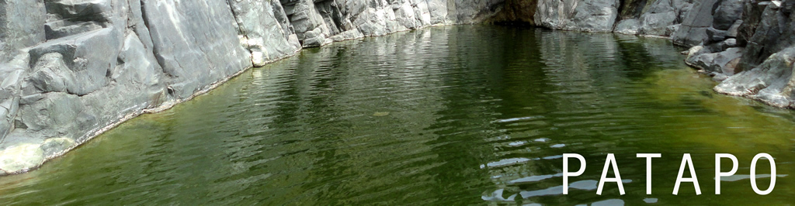
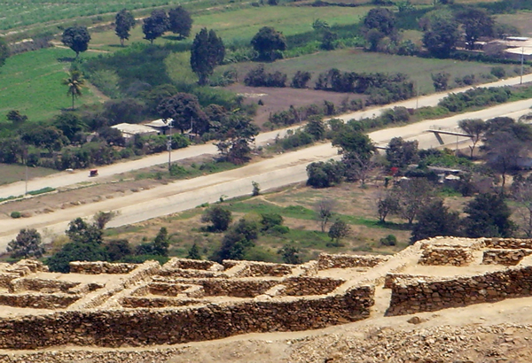
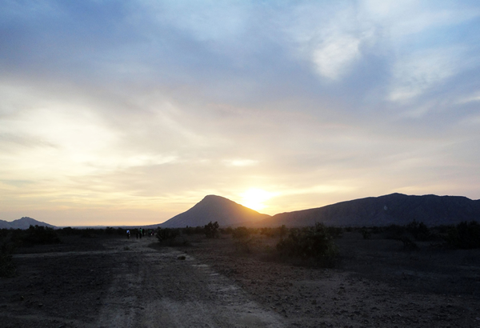
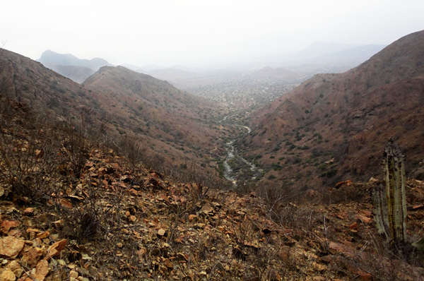
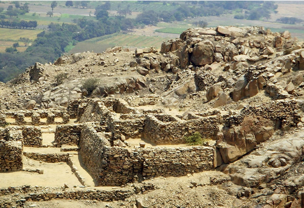
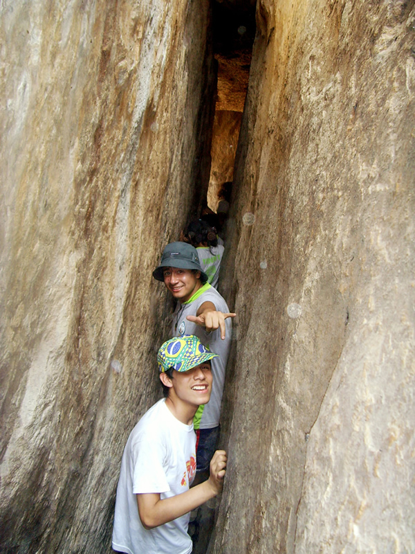

History Off the Beaten Trail
In 2008, local workers decided to excavate the Cerro Pátapo ruins, and helped to uncover remains of the Wari culture. The Wari people were part of an empire spanning from south-central Peru to the Pátapo area sometime between the 7th and 12th centuries. The ruins uncovered in Pátapo consist of a series of rock walls remaining from buildings, such as a prisoner’s court and the residence of a Lord.
Though not an official tourist location, you can walk around and explore these ruins at your convenience. Another must-see location in this area is called the “Laguna del Inca”. Although it takes about a 1-hour drive and a 2-hour hike to reach this location, it is well worth it. This 32-foot deep body of crystal-clear water makes for great swimming and cliff-jumping on a warm day.
Although Pátapo is a small, often overlooked town, it has many historic offerings that are off the beaten track of the normal tourist circuit, and thus may add a bit of adventure to your time in Peru!


| Location |
| Patapo is 16 miles (25 km) east of Chiclayo, about a 40 minute drive. From there, the Inca Lagoon is an hour drive to the hike’s starting point. |
| Price |
| Nothing (except the cost of a guide) |
| English/Spanish Tours |
| All tour guides will need to be separately hired out. If you plan to hike to the Inca Lagoon, a guide is highly recommended due to unmarked trails. |
| Time It Takes |
| Laguna Trail– 5-6 hours, Cerro Patapo– 1 hour (plus travel time) |


| Bathrooms |
| No, but there are at various locations throughout town. |
| Gift Shop |
| None |
| Interesting Facts |
| 1. The water in the “Laguna Del Inca” has been rumored to change color with one’s mood.
2. Rumor has it that in order to have the best chance of reaching the Laguna Del Inca with no problems, one should conduct a ritual to Pachamama before embarking. |
